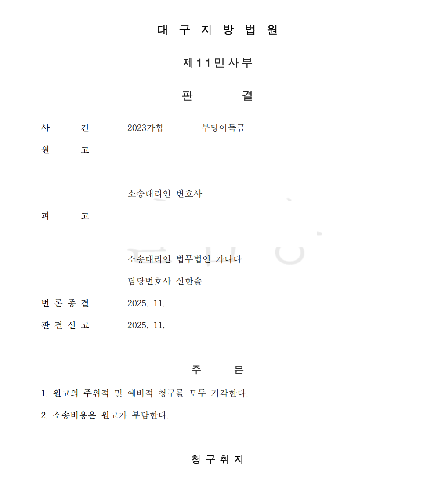

이 사건은 재개발 시행 과정에서 발생한 부동산 매매대금을 둘러싼 가족 재산분쟁이었습니다. 부동산은 30~40억 원대 금액에 매도되었고, 원고와 피고는 각 1/2 지분을 보유하고 있었습니다.
원고는 매매대금 중 5,000만 원을 자신의 계좌에 남기고, 따로 생활하던 딸들에게 각 2억 원씩을 주었습니다. 나머지 매매대금은 자신과 함께 생활하며 부양해 온 아들 및 그 가족들에게 증여하는 방식으로 정리되었습니다.
대출금, 세금, 수수료도 함께 처리되었고, 세무사가 관여하여 양도소득세 신고와 증여세 신고가 이루어졌습니다. 증여계약서도 작성되었습니다.
피고 측은 답변서에서 증여계약서, 증여세 신고자료, 계좌이체 내역, 매매대금 지출 내역을 제시했습니다. 대출금 변제, 세금, 수수료, 딸들에게 지급된 각 2억 원, 원고 계좌에 남긴 5,000만 원, 피고 가족에게 이루어진 증여 내역을 구분하여 자금흐름을 설명했습니다.
그러자 원고 측의 공격은 “돈이 어디 갔느냐”에서 “그 증여계약서가 진짜냐”로 옮겨갔습니다. 원고 측은 증여계약서를 본 적이 없고, 도장을 찍어준 적도 없으며, 증여계약서는 위조된 문서라고 주장했습니다.
증여계약서와 같은 처분문서는 진정성립이 인정되면 그 기재 내용에 따른 의사표시의 존재와 내용이 인정되는 것이 원칙입니다. 따라서 피고 측은 증여계약서에 찍힌 원고 명의 인영이 원고의 인장에 의한 것임을 확인받기 위해 인영감정을 신청했습니다.
그러나 감정 결과는 예상과 달랐습니다. 증여계약서의 인영은 인감대장상 신고인감과 일치하지 않는 것으로 나왔습니다. 이 결과는 원고 측이 위조 주장을 강화할 수 있는 중대한 역풍이었습니다.
인감대장상 신고인감과 다르다는 사실이 곧바로 위조를 의미하는 것은 아닙니다. 중요한 것은 그 도장이 원고가 실제 거래에서 사용해 온 인장인지, 다른 중요한 법률행위와 금융거래에서도 반복적으로 사용되었는지였습니다.
신한솔 변호사는 시행사와 체결한 부동산 매매계약서의 인영, 증여계약서 인영, 원고 명의 통장 인영을 차례로 연결했습니다. 그 결과 문제 된 인장은 신고인감과는 달랐지만, 부동산 거래와 금융거래에서 반복적으로 사용된 실사용 인장이라는 구조가 드러났습니다.
말로만 설명하면 복잡한 이 내용을 도표와 준비서면으로 정리하여, “인감도장만 따로 논다”는 핵심 구조를 재판부와 수사기관이 이해할 수 있게 만들었습니다.
담당 세무사는 양도소득세 신고와 증여세 신고를 처리했고, 증여계약서 작성 경위를 설명할 수 있는 제3자였습니다. 상대방은 증인신문에서 세무사를 강하게 추궁했지만, 원고의 증여 의사를 확인하고 그에 따라 증여계약서 작성과 증여세 신고가 이루어졌다는 핵심 진술은 유지되었습니다.
상대방이 신청한 문서감정도 “증여계약서가 나중에 만들어진 문서”라는 주장을 뒷받침하지 못했습니다. 오히려 원본 증여계약서들이 같은 종류의 용지, 동일한 워드편집 문서와 사무기기, 유사한 시기 출력 및 날인이라는 방향으로 판단되어 담당 세무사의 증언과 맞아떨어졌습니다.
대구지방법원은 원고의 주위적 청구와 예비적 청구를 모두 기각했습니다. 법원은 인감대장상 신고인감과 증여계약서 인영이 일치하지 않는 사정을 인정하면서도, 매매계약서 인영과 증여계약서 인영의 동일성, 담당 세무사의 증언, 문서감정 결과, 증여세 신고와 자금흐름 등을 종합하여 증여계약서의 진정성립과 증여계약 체결 사실을 인정했습니다.
이후 고검 단계에서 직접경정에 의한 재기수사가 이루어지며 형사처벌 위험도 현실화되었지만, 신한솔 변호사는 형사 변호인으로 정식 대응했습니다. 민사에서 정리한 실사용 인장, 세무사 증언, 증여세 신고, 문서감정, 자금흐름의 구조를 형사절차에서도 다시 제출·정리했고, 사문서위조 및 위조된 사문서 행사 혐의도 최종적으로 불기소로 종결되었습니다.
개인정보와 사건번호 일부를 비식별 처리한 사건 결과 문서 일부입니다. 본 사례는 의뢰인 보호를 위해 필요한 범위에서만 내용을 공개합니다.

부모님 부동산 매매대금·증여계약서·인감 불일치·가족 재산분쟁으로 고민하고 계십니까.
신한솔 변호사가 직접 자금흐름과 문서 구조를 검토합니다.
변호사 논평
이 사건은 증여계약서 한 장으로 끝난 사건이 아니었습니다. 인감 불일치라는 불리한 감정결과가 나온 뒤에도, 실제 사용된 인장이 무엇이었는지, 세금 신고와 자금흐름이 무엇을 말하는지, 민사판결이 형사절차에서 어떤 의미를 가지는지까지 하나로 연결해야 했습니다. 복잡한 가족 재산분쟁에서 변호사의 역할은 흩어진 자료를 법원이 판단할 수 있는 구조로 바꾸는 데 있습니다.